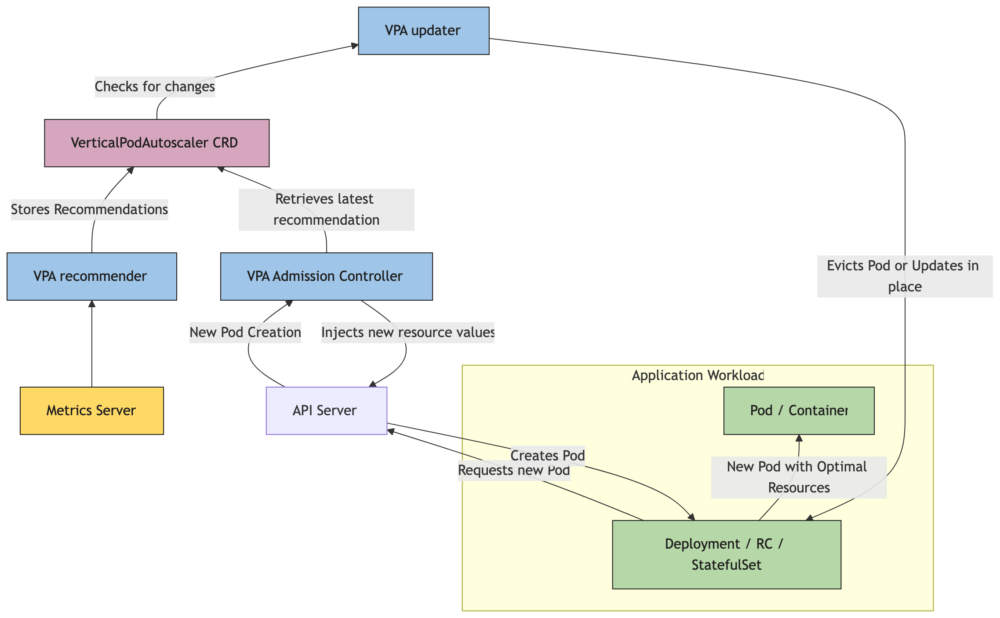

In Kubernetes, a VerticalPodAutoscaler automatically updates a workload management resource (such as a Deployment or StatefulSet), with the aim of automatically adjusting infrastructure resource requests and limits to match actual usage.
Vertical scaling means that the response to increased resource demand is to assign more resources (for example: memory or CPU) to the Pods that are already running for the workload. This is also known as rightsizing, or sometimes autopilot. This is different from horizontal scaling, which for Kubernetes would mean deploying more Pods to distribute the load.
If the resource usage decreases, and the Pod resource requests are above optimal levels, the VerticalPodAutoscaler instructs the workload resource (the Deployment, StatefulSet, or other similar resource) to adjust resource requests back down, preventing resource waste.
The VerticalPodAutoscaler is implemented as a Kubernetes API resource and a controller. The resource determines the behavior of the controller. The vertical pod autoscaling controller, running within the Kubernetes data plane, periodically adjusts the resource requests and limits of its target (for example, a Deployment) based on analysis of historical resource utilization, the amount of resources available in the cluster, and real-time events such as out-of-memory (OOM) conditions.
API object
The VerticalPodAutoscaler is defined as a Custom Resource Definition (CRD) in Kubernetes. Unlike HorizontalPodAutoscaler, which is part of the core Kubernetes API, VPA must be installed separately in your cluster.
The current stable API version is autoscaling.k8s.io/v1.
More details about the VPA installation and API can be found in the VPA
GitHub repository.
How does a VerticalPodAutoscaler work?

Kubernetes implements vertical pod autoscaling through multiple cooperating components that run intermittently (it is not a continuous process). The VPA consists of three main components:
- The recommender, which analyzes resource usage and provides recommendations.
- The updater, that Pod resource requests either by evicting Pods or modifying them in place.
- And the VPA admission controller webhook, which applies resource recommendations to new or recreated Pods.
Once during each period, the Recommender queries the resource
utilization for Pods targeted by each VerticalPodAutoscaler definition.
The Recommender finds the target resource defined by the
targetRef, then selects the pods based on the target
resource's .spec.selector labels, and obtains the metrics
from the resource metrics API to analyze actual CPU and memory
consumption.
The Recommender analyzes both current and historical resource usage data (CPU and memory) for each Pod targeted by the VerticalPodAutoscaler. It examines:
- Historical consumption patterns over time to identify trends
- Peak usage and variance to ensure sufficient headroom
- Out-of-memory (OOM) events and other resource-related incidents
Based on this analysis, the Recommender calculates three types of recommendations:
- Target recommendation (optimal resources for typical usage)
- Lower bound (minimum viable resources)
- Upper bound (maximum reasonable resources).
These recommendations are stored in the VerticalPodAutoscaler
resource's .status.recommendation field.
The updater component monitors the VerticalPodAutoscaler resources and compares current Pod resource requests with the recommendations. When the difference exceeds configured thresholds and the update policy allows it, the updater can either:
- Evict Pods, triggering their recreation with new resource requests (traditional approach)
- Update Pod resources in place without eviction, when the cluster supports in-place Pod resource updates
The chosen method depends on the configured update mode, cluster capabilities, and the type of resource change needed. In-place updates, when available, avoid Pod disruption but may have limitations on which resources can be modified. The updater respects PodDisruptionBudgets to minimize service impact.
The admission controller operates as a mutating webhook that
intercepts Pod creation requests. It checks if the Pod is targeted by a
VerticalPodAutoscaler and, if so, applies the recommended resource
requests and limits before the Pod is created. More specifically, the
admission controller uses the Target recommendation in the
VerticalPodAutoscaler resource's .status.recommendation
stanza as the new resource requests. The admission controller ensures
new Pods start with appropriately sized resource allocations, whether
they're created during initial deployment, after an eviction by the
updater, or due to scaling operations.
The VerticalPodAutoscaler requires a metrics source, such as
Kubernetes' Metrics Server add-on, to be installed in the cluster. The
VPA components fetch metrics from the metrics.k8s.io API.
The Metrics Server needs to be launched separately as it is not deployed
by default in most clusters. For more information about resource
metrics, see Metrics
Server.
Update modes
A VerticalPodAutoscaler supports different update modes that
control how and when resource recommendations are applied to your Pods.
You configure the update mode using the updateMode field in
the VPA spec under updatePolicy:
---
apiVersion: autoscaling.k8s.io/v1
kind: VerticalPodAutoscaler
metadata:
name: my-app-vpa
spec:
targetRef:
apiVersion: "apps/v1"
kind: Deployment
name: my-app
updatePolicy:
updateMode: "Recreate" # Off, Initial, Recreate, InPlaceOrRecreate, InPlaceOff
In the Off update mode, the VPA recommender still analyzes
resource usage and generates recommendations, but these recommendations
are not automatically applied to Pods. The recommendations are only
stored in the VPA object's .status field.
You can use a tool such as kubectl to view the
.status and the recommendations in it.
Initial
In Initial mode, VPA only sets resource requests when Pods are first created. It does not update resources for already running Pods, even if recommendations change over time. The recommendations apply only during Pod creation.
Recreate
In Recreate mode, VPA actively manages Pod resources by evicting Pods when their current resource requests differ significantly from recommendations. When a Pod is evicted, the workload controller (managing a Deployment, StatefulSet, etc) creates a replacement Pod, and the VPA admission controller applies the updated resource requests to the new Pod.
InPlaceOrRecreate
In InPlaceOrRecreate mode, VPA attempts to update Pod
resource requests and limits without restarting the Pod when possible.
However, if in-place updates cannot be performed for a particular
resource change, VPA falls back to evicting the Pod (similar to
Recreate mode) and allowing the workload controller to
create a replacement Pod with updated resources.
In this mode, the updater applies recommendations in-place using the Resize Container Resources In-Place feature.
InPlace
This mode is available as an alpha feature in VPA 1.7.0 and requires
Kubernetes 1.33 or later with the InPlacePodVerticalScaling
cluster feature gate enabled, and the InPlace feature gate
enabled on the VPA updater and admission controller. It uses the in-place
Pod resize feature to apply updates without disrupting the Pod.
In InPlace mode, VPA attempts to update Pod resource
requests and limits without restarting or evicting the Pod. Unlike
InPlaceOrRecreate, this mode never falls back to
eviction. If an in-place update cannot be applied (for example,
because the node does not have enough capacity), VPA defers the update
and retries it in a subsequent reconciliation loop.
To use InPlace mode, enable the InPlace
feature gate on both the VPA updater and admission controller:
--feature-gates=InPlace=trueThen set updateMode to "InPlace" in your
VPA spec:
apiVersion: autoscaling.k8s.io/v1
kind: VerticalPodAutoscaler
metadata:
name: my-app-vpa
spec:
targetRef:
apiVersion: "apps/v1"
kind: Deployment
name: my-app
updatePolicy:
updateMode: "InPlace"Key difference from InPlaceOrRecreate:
When a resize is deferred, in progress, or infeasible,
InPlace mode always waits and retries — it never evicts the
Pod, regardless of how long the update is pending.
Auto (deprecated)
Note:
The Auto update mode is deprecated since VPA
version 1.4.0. Use Recreate for eviction-based
updates, or InPlaceOrRecreate for in-place updates with
eviction fallback.
Auto mode is currently an alias for
Recreate mode and behaves identically. It was introduced to
allow for future expansion of automatic update strategies.
Resource policies
Resource policies allow you to fine-tune how the VerticalPodAutoscaler generates recommendations and applies updates. You can set boundaries for resource recommendations, specify which resources to manage, and configure different policies for individual containers within a Pod.
You define resource policies in the resourcePolicy field
of the VPA spec:
apiVersion: autoscaling.k8s.io/v1
kind: VerticalPodAutoscaler
metadata:
name: my-app-vpa
spec:
targetRef:
apiVersion: "apps/v1"
kind: Deployment
name: my-app
updatePolicy:
updateMode: "Recreate"
resourcePolicy:
containerPolicies:
- containerName: "application"
minAllowed:
cpu: 100m
memory: 128Mi
maxAllowed:
cpu: 2
memory: 2Gi
controlledResources:
- cpu
- memory
controlledValues: RequestsAndLimitsminAllowed and maxAllowed
These fields set boundaries for VPA recommendations. The VPA will
never recommend resources below minAllowed or above
maxAllowed, even if the actual usage data suggests
different values.
controlledResources
The controlledResources field specifies which resource
types VPA should manage for a container in a Pod. If not specified, VPA
manages both CPU and memory by default. You can restrict VPA to manage
only specific resources. Valid resource names include cpu
and memory.
controlledValues
The controlledValues field determines whether VPA
controls resource requests, limits, or both:
- RequestsAndLimits
- VPA sets both requests and limits. The limit scales proportionally to the request based on the request-to-limit ratio defined in the Pod spec. This is the default mode.
- RequestsOnly
- VPA only sets requests, leaving limits unchanged. Limits are respected and can still trigger throttling or out-of-memory kills if usage exceeds them.
See requests and limits to learn more about those two concepts.
LimitRange resources
The admission controller and updater VPA components post-process
recommendations to comply with the constraints defined in LimitRanges. The
LimitRange resources with type Pod and Container are
checked in the Kubernetes cluster.
For example, if the max field in a Container LimitRange
resource is exceeded, both VPA components lower the limit to the value
defined in the max field, and the request is proportionally
decreased to maintain the request-to-limit ratio in the Pod spec.
What's next
If you configure autoscaling in your cluster, you may also want to consider using node autoscaling to ensure you are running the right number of nodes. You can also read more about horizontal Pod autoscaling.